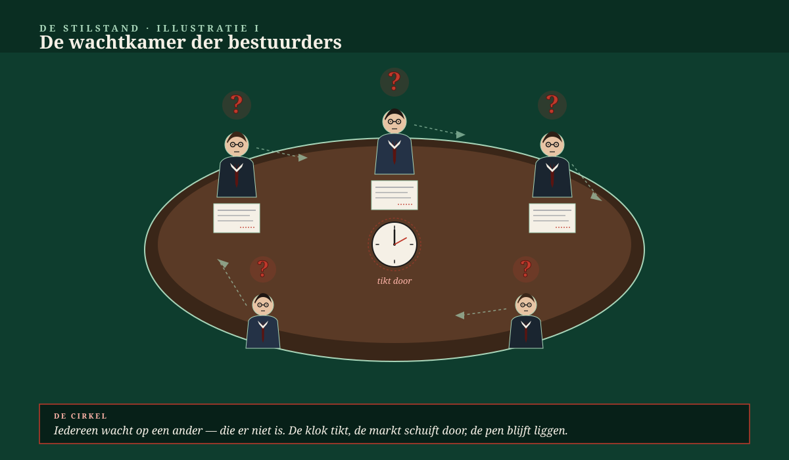
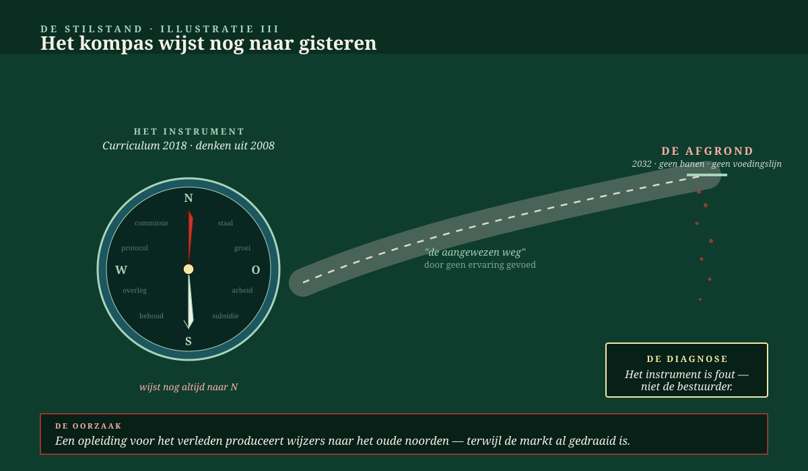
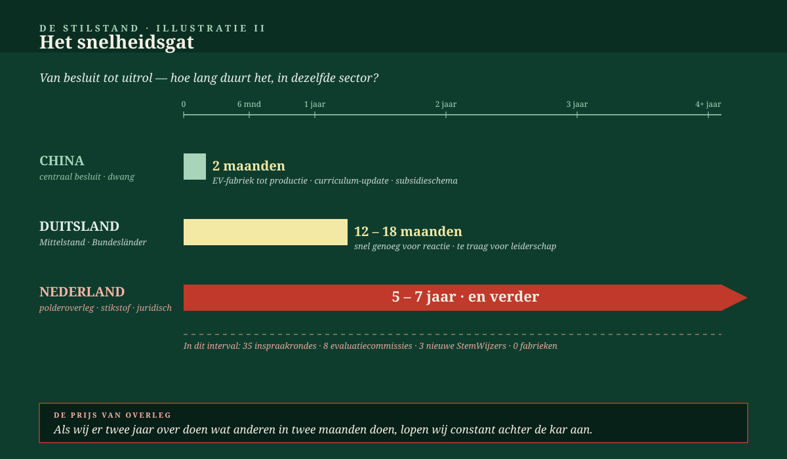

La linea di alimentazione
Il coraggio di dire che qualcosa non funziona manca per assenza di autoconoscenza — un errore strutturale, non un difetto di carattere. Tutta l'Europa ha murato le proprie vie d'uscita; tutte le leggi sono fatte in modo che da nessuna parte si possa più prendere una decisione vera. Le leggi di chi ci ha preceduto non conoscono il futuro; la natura sì, e deve tornare a guidare.
Di Jacobus van Merksteijn · Malta, giugno 2026

Il cibo al supermercato è la nostra alimentazione. Quando riteniamo che il supermercato guadagni troppo, e lo indeboliamo con regolamentazione dei prezzi, tasse e adempimenti — non distruggiamo "il profitto degli azionisti". Distruggiamo la nostra linea di alimentazione. Scaffali vuoti, avanzi importati da paesi dove le stesse regole non valgono, prezzi più alti per meno qualità. Non è giustizia; è autoamputazione.
Questo principio vale ovunque. L'agricoltore, l'imprenditore, le PMI, l'esportatore, l'investitore industriale, l'ente di formazione: sono tutte linee di alimentazione. Chi dice che guadagnano troppo, e che quindi il loro spazio deve essere ridotto, taglia nella circolazione sanguigna dell'intero sistema. Non per malevolenza — per mancanza di riflessione sul funzionamento di un organismo vivente.
Il caso del supermercato
Come veniamo nutriti, e come lo distruggiamo
Il supermercato olandese — Albert Heijn, Jumbo, Lidl, Aldi, Plus — nutre 17,5 milioni di persone. Tre volte al giorno. Ogni giorno. Sette giorni su sette. Nessuno si lamenta della carestia; gli scaffali sono pieni; i prezzi sono relativamente bassi; la qualità è straordinariamente buona.
I margini nella catena dei supermercati olandesi sono del 2,1-3,4 per cento — inferiori a quelli della grande distribuzione spagnola, tedesca e italiana. I grandi profitti non si trovano nel supermercato stesso; si trovano negli oligopoli fornitori (latticini, pane, lavorazione della carne, marchi di bibite). Ma nell'immaginario pubblico — alimentato da politici in cerca di un nemico — è il supermercato il grande guadagnatore.
Cosa succede se limitiamo i margini dei supermercati per legge, introduciamo la regolamentazione dei prezzi o imponiamo requisiti aggiuntivi tramite l'Autorità Garante della Concorrenza? La catena perde capacità di investimento. I centri di distribuzione non vengono rinnovati. I negozi di prodotti freschi chiudono. La logistica viene rilevata da concorrenti stranieri che non conoscono le regole. Gli scaffali diventano meno pieni, meno freschi, meno vari. Il consumatore perde più di quanto guadagni dalla regolamentazione dei prezzi.
Peggio ancora: quando la catena dei supermercati si indebolisce, si indeboliscono anche gli agricoltori olandesi che la riforniscono. La linea di vendita diventa inaffidabile. Gli agricoltori smettono. Le importazioni colmano il vuoto. La linea di alimentazione passa ora per Romania, Brasile e Vietnam — ed è più costosa, più vulnerabile e più corta di prima.
Questo non è un'apologia dei "profitti illimitati". È un avvertimento che la linea di alimentazione che ci nutre letteralmente non è un'astrazione. È misurabile in calorie, chili, carrelli pieni, scelta disponibile. Chi la soffoca non ottiene giustizia, ma meno cibo.
La linea di alimentazione come legge di natura
Il supermercato è una linea di alimentazione. Ma il principio è universale. Tutto ciò che vive ha una linea di alimentazione. Il corpo ha respirazione, nutrizione e circolazione sanguigna. Una comunità ha agricoltura, artigianato e commercio. Un'azienda ha fatturato e produttività del lavoro. Uno stato ha un settore produttivo che genera tasse. Una civiltà ha un sistema energetico che rende possibile il suo lavoro. Tagliate una qualsiasi di queste linee di alimentazione, e il sistema soprastante si restringe o crolla.
Questa non è ideologia. È un fatto fisiologico e termodinamico. Ogni organizzazione — dalla singola cellula allo stato transnazionale — ha bisogno di un afflusso netto di energia e nutrienti superiore alla sua perdita. Quando il deflusso supera l'afflusso, si genera degrado. Non domani, non tra dieci anni — ma inevitabilmente.
Il principio della linea di alimentazione
Niente vive senza una linea di alimentazione. Non la cellula, non l'azienda agricola, non l'impresa, non il supermercato, non il comune, non la nazione, non l'Unione Europea. Chi esige conservazione senza proteggere la linea di alimentazione che la finanzia, sta praticando un'autosoppressione — indipendentemente dalle sue intenzioni.
La sostituzione è ciò che una linea di alimentazione sana fa continuamente. Le cellule vengono sostituite. Le colture si spostano. Le imprese si rinnovano. La tecnologia viene aggiornata. Non come perdita, ma come condizione di sopravvivenza. Un sistema che blocca la sostituzione blocca la propria linea di alimentazione.
Tre forze, un solo errore di pensiero
Tre forze politiche in Europa condividono lo stesso errore strutturale di pensiero: vogliono conservare più di più, senza riconoscere cosa questo comporti per la linea di alimentazione.

L'autorità climatica di Bruxelles
Vuole conservare: le zone climatiche del 1990, le specie del 1990, il paesaggio del 1990. Più extra: riduzione delle emissioni del 55 per cento entro il 2030, biodiversità al livello del 1970, tutto a zero netto. Allo stesso tempo: più regolamentazione, più sussidi, più funzionari, più adempimenti.
Linea di alimentazione: il settore produttivo europeo. Viene soffocato tramite i prezzi ETS, le tariffe CBAM, i prezzi dell'energia, la regolamentazione e i costi di adempimento. Risultato: l'industria automobilistica tedesca si trasferisce in Cina (500.000 FTE già persi dal 2023), l'industria ad alta intensità energetica si trasferisce negli Stati Uniti, gli agricoltori abbandonano il settore in massa, il benessere si riduce. L'autorità climatica di Bruxelles può raggiungere il proprio obiettivo solo soffocando la linea di alimentazione da cui proviene il suo stesso budget.
I partiti di sinistra olandesi
GroenLinks-PvdA, D66 nella sua variante di sinistra, BIJ1, Volt: vogliono conservare — lo stato sociale del 1980, il salario minimo, la tutela dei lavoratori, la pensione. Più extra: più sanità, più istruzione, più abitazioni, più azione climatica, più accessibilità, più redistribuzione.
Linea di alimentazione: le PMI olandesi, il lavoratore autonomo, l'amministratore-azionista, l'esportatore, l'industria innovativa. Viene soffocata tramite l'imposta sulle società, gli aumenti sul "box-2", le aliquote IRPEF, le regole per i lavoratori autonomi, gli iter autorizzativi, la costrizione sull'azoto e le tasse sulla crescita. Risultato: gli imprenditori se ne vanno verso il Portogallo o Dubai, le famiglie con patrimoni in crescita emigrano, le PMI si riducono. La coalizione di sinistra può raggiungere il proprio obiettivo solo soffocando la linea di alimentazione da cui trae la sua redistribuzione.
I sindacati
FNV, CNV, i sindacati di settore in sanità, istruzione, edilizia, industria: vogliono conservare — posti fissi, salari fissi, pensioni fisse, settimana lavorativa fissa, diritti fissi. Più extra: salari più alti, settimana lavorativa più corta (32 ore), più giorni liberi, più continuità retributiva, più mantenimento del posto, più protezione dal licenziamento.
Linea di alimentazione: gli stessi datori di lavoro da cui i membri ricevono il salario. Vengono soffocati tramite aumenti contrattuali che non possono più essere compensati da miglioramenti della produttività. Risultato: il datore di lavoro deve automatizzare, fallire o trasferirsi — e i posti di lavoro che i sindacati volevano proteggere scompaiono. Il sindacato può raggiungere il proprio obiettivo solo soffocando la linea di alimentazione da cui provengono i posti di lavoro dei suoi membri.
L'errore condiviso
Tutti e tre vogliono conservare più esigenze aggiuntive, ignorando completamente la linea di alimentazione che deve finanziarlo. Nessuno dei tre si pone la domanda: da dove vengono i soldi che pagano tutto questo, e cosa succede a quella fonte se la mettiamo alle strette?
Quando la linea di alimentazione viene meno, prima cadono le esigenze aggiuntive, poi la conservazione stessa, e infine crolla l'intero sistema. Non è una previsione — è come organismi, imprese, comuni e stati periscono da migliaia di anni.
Nessuna autoconoscenza, nessuna rivoluzione
Qui tocchiamo lo strato più profondo. Non è che gli amministratori siano troppo vigliacchi per dire che qualcosa non funziona. Non è che manchino di spina dorsale. È che manca loro l'autoconoscenza per sapere che qualcosa non funziona — e questo è un errore strutturale, non un difetto di carattere.
L'autoconoscenza è la capacità di giudicare da sé se qualcosa funziona o non funziona, indipendentemente da cosa ne pensino la maggioranza, la legge, il curriculum o la commissione. L'autoconoscenza non nasce dai libri. Nasce dal commettere da sé l'errore, dal sentire da sé che una strada è senza uscita, dal portare da sé il dolore di una scelta sbagliata, e dall'imparare da sé da essa. È questo che dà a una persona l'autoconoscenza: errori vissuti.
Un sistema che esclude gli errori esclude anche l'autoconoscenza. Una formazione che rende sicuri tutti i percorsi non rende le persone più sagge — le rende incapaci di diventarlo. Abbiamo formato tre generazioni in un ambiente in cui ogni decisione era già stata presa per loro, ogni risposta era già compilata, ogni svolta era già segnata. Il risultato: un intero ceto dirigente senza un solo vero errore vissuto al proprio attivo. Non perché non avrebbe osato commetterlo — ma perché il sistema non gliene ha mai dato la possibilità.
L'errore strutturale
La rivoluzione — nel senso di osare dire che qualcosa non funziona e che esiste un'altra via — richiede autoconoscenza. L'autoconoscenza richiede errori vissuti. Gli errori vissuti richiedono il diritto di sbagliare strada. Quel diritto è stato tolto da tre generazioni di istruzione sicura, amministrazione sicura, procedure sicure, percorsi di carriera sicuri.
Ciò che resta è un ceto dirigente che assume per autorità tutto ciò che deve fare, perché non ha un proprio punto d'ancoraggio da cui poter dire “questo non funziona”. Non per viltà — per mancanza di strumento. Lo strumento si chiama autoconoscenza. Non gli è mai stato concesso.
Ecco perché la critica dall'interno del sistema resta in superficie. Chi è cresciuto dentro il sistema può essere critico solo entro le parole del sistema stesso. Può dire “questa procedura potrebbe essere più efficiente”, non “questa procedura nel suo insieme non funziona”. Può dire “più sussidi” o “meno sussidi”, non “nessun sussidio”. Può dire “zero netto nel 2030” o “zero netto nel 2035”, non “zero netto è l'unità di misura sbagliata”. La domanda radicale — se il concetto stesso sia valido — non riesce nemmeno a formularla, perché il suo linguaggio si è formato dentro quel concetto.
La rivoluzione necessaria non è quindi politica. È epistemica: ripristinare l'autoconoscenza come fonte legittima di giudizio. Solo chi sa ciò che sa — perché lo ha vissuto personalmente, e non perché glielo ha detto un manuale o una commissione — può dire che il re è nudo. Chiunque abbia la propria conoscenza esclusivamente dalla fabbrica dei vestiti del re, vede vestiti dove non ci sono vestiti.
Il sistema espelle i suoi ribelli per riflesso
Qui entra in gioco un secondo meccanismo, uno strato più profondo. La nostra intera società — le nostre istituzioni, le nostre procedure, il nostro processo decisionale, la nostra istruzione, l'intero nostro modello di civiltà — è costruita su un agire e pensare evolutivo. Piccoli passi, formazione del consenso, cambiamento graduale, cautela. Chi si muove al suo interno viene riconosciuto e accettato. Chi si muove al suo esterno è per definizione estraneo al sistema.
Il rivoluzionario non è qualcuno che va troppo oltre. È qualcuno che va oltre la logica su cui il sistema stesso è fondato. Pone domande che all'interno del sistema non si possono porre. Vede schemi che all'interno del sistema non sono visibili. Propone direzioni che all'interno del sistema non sono affrontabili. Questo non gli dà automaticamente ragione — ma lo rende indigeribile per il sistema che lo genera.
E così accade qualcosa di sconcertantemente umano: lo espelliamo senza davvero riflettere su di lui. Non per rabbia, non per ponderazione, non per un argomento confutante. Per riflesso. Viene emarginato dalla stampa, non citato nella ricerca, rifiutato dalle commissioni, non assunto per incarichi. Le sue idee vengono giudicate inspiegabili — “non lo capisco, quindi non è corretto” — oppure vengono opportunamente etichettate come “teoria del complotto”, “estremista”, “nessun consenso scientifico”, “non realistico”, “non attuabile”. Tutte parole che non dicono nulla sul contenuto di ciò che afferma. Tutte parole che dicono solo: non è dei nostri.
Tre esempi dalla realtà stessa
BiCRS / etanolo da biomassa equatoriale: una soluzione evolutiva per la questione della CO₂ — ciclo del carbonio invece di zero netto imposto per legge — che altrove nel mondo (Brasile, Indonesia) funziona semplicemente ed è sistematicamente respinta in Europa. Non perché i numeri non tornino. Ma perché esula dal paradigma ETS+CBAM su cui è costruita l'intera burocrazia climatica. Chi propone il BiCRS non è candidabile per un incarico UE.
VMP — un partito a mandato volontario: una forma politica non vincolata agli elettori e quindi capace di prendere decisioni che agli elettori non piacciono. Sulla carta, esattamente ciò che serve per la transizione. Nella pratica: inedito, non classificabile, non in linea con “come si fa nei Paesi Bassi”. Non confutato — non letto.
La Gevolgenkaart (mappa delle conseguenze): uno strumento diagnostico che mostra, per ogni posizione di voto, quale sia il drenaggio di benessere. Qualcosa che gli "orientatori di voto" tradizionali non sono in grado di fare. Ma non viene ripreso dalla scienza politica esistente, non viene discusso dalla stampa, non viene esaminato da commissioni. Non per errori nella matrice — per incapacità di pensare al di fuori del proprio quadro di riferimento.
Lo schema è ovunque lo stesso: non viene esaminato il contenuto di ciò che dice il ribelle, ma la sua posizione rispetto al sistema. “Chi è veramente?” — invece di “cosa dice?” “Da che parte sta?” — invece di “è corretto?” Non è malevolenza; è riflesso. Il sistema ha i suoi anticorpi, e questi agiscono automaticamente.
La trappola evolutiva
L'agire evolutivo funziona finché l'ambiente cambia in modo evolutivo — lentamente, prevedibilmente, con tempo sufficiente per formare consenso. Ci troviamo di fronte a un ambiente che cambia in modo rivoluzionario: l'IA in mesi, il ritmo cinese in settimane, il clima in anni, non decenni. In un momento simile, un sistema puramente evolutivo non è sicuro, ma letale — non ha un meccanismo per cambiare rapidamente rotta.
Proprio in questo punto di svolta ci siamo privati della capacità di riconoscere i rivoluzionari. Non perché non esistano — esistono, e sempre di più. Ma abbiamo sviluppato un riflesso contro di loro. Il risultato: le persone che potrebbero ancora salvarci vengono espulse prima ancora di essere state lette.
Questa non è un'apologia per dare ragione a ogni esterno. Molti ribelli hanno torto — è proprio per questo che abbiamo costruito il nostro sistema evolutivo. Ma il problema non è che siamo scettici verso i ribelli; il problema è che non esaminiamo più. Abbiamo sostituito lo scetticismo con il riflesso. Una società sana metterebbe alla prova il rivoluzionario sui suoi argomenti. Una società irrigidita lo espelle per la sua forma.
L'Europa ha murato le proprie vie d'uscita
Chi pensa che questo sia un problema olandese, francese, tedesco — si sbaglia. Il problema si è insediato in tutta l'ampiezza del continente europeo, e in modo tale che non c'è più via d'uscita. Non tramite un altro paese, non tramite un'altra coalizione, non tramite un'altra legge. Tutte le strade sono murate da leggi che servono lo stesso scopo: fare in modo che da nessuna parte si possa più prendere una decisione vera.
Osservate come lo schema attraversi tutti i livelli della società europea:
- Legislazione: ogni decisione deve passare prima per 27 stati membri, poi per il Parlamento Europeo, poi per la Corte di Giustizia, poi per 27 parlamenti nazionali, poi per 27 giudici nazionali, poi per i comuni, poi per le corti d'appello, poi per le parti interessate. Dieci-quindici anni dopo, la decisione è diluita fino a diventare irriconoscibile.
- Rilascio dei permessi: costruire una nuova fabbrica richiede in media sette anni nei Paesi Bassi; cinque in Germania; otto in Francia. Non perché la fabbrica sia complessa — perché la procedura è stata resa complessa da un accumulo di decenni di leggi di tutela da cui non si può più uscire.
- Istruzione: gli insegnanti non possono più fallire, le scuole non possono più essere severe, le università non possono più stilare classifiche che feriscono. Tutti vengono guidati in sicurezza attraverso il sistema. Nessuno finisce mai in un vicolo cieco. Quindi nessuno impara di aver sbagliato.
- Mercato del lavoro: licenziare costa un patrimonio, assumere comporta obblighi pluriennali, automatizzare viene penalizzato fiscalmente. Il datore di lavoro non osa più decidere — quindi non si prende alcuna decisione, e l'occupazione produttiva emigra.
- Amministrazione: i ministri non possono decidere senza commissioni, le commissioni non possono decidere senza consultazione, le consultazioni non possono decidere senza revisione paritaria, le revisioni paritarie non possono decidere senza audizione. Non esiste più un luogo dove la decisione venga presa.
- Politica climatica: ETS, CBAM, RED-III, Fit-for-55, Green Deal, Just Transition — ogni strumento è costruito in modo che nessuno stato membro possa più uscirne, nessun parlamento possa più discostarsene, e nessun governo futuro possa più tornare indietro. Le leggi di oggi hanno già reso impossibili le leggi di domani.
Un sistema chiuso
Lo schema è ovunque lo stesso: ogni legge rende impossibile fare diversamente la legge successiva. Non viviamo in una democrazia in cui possiamo cambiare rotta. Viviamo in un bozzolo che si chiude, fatto di leggi di persone che non potevano conoscere il futuro — e che non ci permettono più di scoprire da soli quel futuro.
Le leggi di chi ci ha preceduto non possono conoscere il futuro. Sono state scritte per il mondo che vedevano. Noi ci troviamo davanti a un mondo diverso. Ma non possiamo decidere — perché le loro leggi lo vietano.
La natura sa più delle nostre leggi
Se tutte le strade sono murate dalle leggi degli uomini, resta ancora una sola guida che non può essere abolita da commissioni, giuristi o maggioranze: la natura. La natura non conosce quorum, veto, round di consultazione. Ha preso decisioni continuamente per tre miliardi di anni, ha sbagliato strada, e ha imparato. Sa molto più di qualsiasi legislatore — perché ha vissuto ciò che noi possiamo solo prevedere.
Cosa accadrebbe se riprendessimo la natura come guida, invece delle leggi degli uomini che non conoscono il futuro?
- Ciclo della materia invece di zero netto: la natura non conosce lo “zero netto di CO₂”. Conosce un ciclo del carbonio in cui ogni grammo che esce dal suolo viene di nuovo immagazzinato altrove — nella biomassa, negli oceani, nel suolo. Il BiCRS segue quel ciclo. L'ETS e il CBAM cercano di congelarlo.
- Sostituzione invece di conservazione: la natura sostituisce continuamente. Cellule, foglie, specie, biotopi. Ciò che non è più adattato al proprio ambiente scompare; ciò che si adatta guadagna terreno. Le nostre leggi tentano il contrario: conservare tutto, a qualsiasi costo.
- Diversità invece di monocoltura: un suolo sano ha migliaia di specie microbiche fianco a fianco; un'economia sana ha migliaia di tipi di imprenditori fianco a fianco. Le nostre leggi producono monocolture — un solo tipo di istruzione, un solo tipo di impresa, un solo tipo di contratto di lavoro, un solo tipo di fornitore.
- Azione rapida e adattata invece di consultazioni infinite: un organismo che “delibera” troppo a lungo quando si avvicina un predatore è morto. La natura premia la velocità di decisione. Le nostre leggi premiano il ritardo di decisione.
- Adattamento locale invece di uniformità centrale: in natura nessun biotopo è uguale a un altro. Le nostre leggi impongono un'unica regola per tutta l'Europa, dalla Lapponia alla Sicilia, come se suolo, clima e cultura non esistessero.
La differenza tra una legge e una legge di natura è questa: la legge fatta dagli uomini è contingente — vale finché la maggioranza la sostiene, e può cambiare domani. La legge di natura è necessaria — vale che la si riconosca o no. Chi governa contro la gravità, cade. Chi governa contro la linea di alimentazione, muore di fame. Chi governa contro la sostituzione, si estingue.
Il ritorno della guida verso la natura
L'Europa ha posto le proprie leggi al di sopra della natura e si è così rinchiusa in se stessa. L'unico modo per uscirne non sono leggi migliori — è far tornare la natura a guidare. Non come sentimento, non come religione, non come “obiettivo di biodiversità”. Ma come il vero maestro che ha tre miliardi di anni di esperienza nel sopravvivere al cambiamento continuo.
Le nostre leggi devono adattarsi a lei, non il contrario. Non è un'affermazione anti-moderna; è l'unica possibilità rimasta di conoscere ancora il futuro — perché le persone che vogliono fissarlo in anticipo non possono farlo per definizione.
Il caso della formazione

Formiamo per il mondo di ieri
I Paesi Bassi formano ogni anno circa 8.500 ingegneri nelle proprie università tecniche. Questi studenti iniziano gli studi nel settembre 2026, si laureano nel 2031 o 2032 (triennale) o nel 2034 (magistrale), ed entrano nel mercato del lavoro con conoscenze formate in sei-otto anni — plasmate da curricula fissati tra il 2018 e il 2023.
Nello stesso periodo, GPT-4 (2023) ha lasciato il posto a GPT-5 (2024), Claude 3 (2024), Gemini-2 (2025), GPT-5.5 (2025), le prime IA agentiche, e i primi agenti di ingegneria del software completamente autonomi. Un sistema di IA nel 2026 può già svolgere più compiti tipici da ingegnere di quanto possa fare un ingegnere junior appena laureato — più velocemente, con maggiore precisione, e senza malattia.
Questo non significa che gli ingegneri diventino superflui. Significa che il tipo di ingegnere che formiamo ora — portatore di conoscenza generica, allievo del manuale del 2018 — nel 2032 non sarà più redditizio. Lo studente del 2026 che si laurea nel 2032 arriva su un mercato dove l'IA svolge già il suo lavoro. Diventa strutturalmente disoccupato, oppure deve comunque riqualificarsi in qualcosa che l'IA non fa: formazione del giudizio, negoziazione etica, lavoro fisico-spaziale, gestione complessa multi-stakeholder.
Il settore della formazione olandese non riesce a stare al passo. I curricula vengono adattati più lentamente di quanto evolva la tecnologia stessa. Le università sono strutturalmente configurate per la stabilità, non per l'agilità. I sindacati degli insegnanti si oppongono a una ristrutturazione radicale. Il ministero dell'Istruzione lavora con piani pluriennali che per definizione sono in ritardo. Il risultato: ogni anno 8.500 ingegneri vengono immessi in un mondo per cui non sono stati formati.
I costi di questo disallineamento sono enormi ed evitabili:
- Finanziamento degli studi: €20.000–35.000 per studente × 8.500 × 6 anni = da €1,0 a 1,8 miliardi per ogni coorte che finisce nel posto sbagliato.
- Riqualificazione dopo la laurea: €15.000–25.000 a persona × circa il 40 per cento della coorte = da €510 milioni a €850 milioni extra.
- Anni produttivi persi: in media 18 mesi tra la laurea e il primo lavoro redditizio in un settore adeguato.
- Malcontento sociale: professionisti qualificati che non trovano lavoro nel proprio campo alimentano l'instabilità politica.
Questo si può evitare guardando meglio avanti. Di cosa avremo bisogno nel 2032? Non di ingegneri generici. Bensì: gestione di processi BiCRS, agromeccatronica per piantagioni equatoriali, ingegneria della distillazione dell'etanolo, gestione complessa di progetti climatici multi-stakeholder, lavoro di assistenza agli anziani che l'IA non può svolgere, negoziazione normativa, valutazione etica dell'IA. Ma formiamo per ciò di cui avevamo bisogno in passato. La linea di alimentazione del futuro mercato del lavoro viene così recisa prima ancora di nascere.
La velocità con cui altri paesi si riconvertono
Arriviamo ora al secondo grande problema: anche quando riconosciamo di dover riconvertirci, lo facciamo molto troppo lentamente.

| Paese / regione | Recente riconversione strutturale | Tempo di realizzazione |
|---|---|---|
| Cina | Produzione in volume di EV BYD: da 0 a 4 milioni di unità/anno | ~36 mesi (2021–2024) |
| Cina | Produzione di celle solari: dal 60% al 90% del mercato mondiale | ~24 mesi (2022–2024) |
| Cina | Passaggio dal lockdown alla riapertura (inversione della politica zero-COVID) | ~2 mesi (ottobre–dicembre 2022) |
| Emirati Arabi Uniti | Imposta sul reddito d'impresa dallo 0% al 9% | ~9 mesi di preparazione + 0 mesi di attuazione (2023) |
| Singapore | Curriculum IA nell'istruzione primaria e secondaria a livello nazionale | ~18 mesi (2023–2025) |
| India | Diffusione nazionale del sistema di pagamento UPI | ~24 mesi di adozione a livello nazionale (2016–2018) |
| Paesi Bassi | Correzione dello scandalo dei sussidi (Toeslagenaffaire) | 5+ anni (2018–2026, non ancora completata) |
| Paesi Bassi | Approccio all'azoto (dalla sentenza del Consiglio di Stato del 2019) | 7+ anni, ancora irrisolto |
| Paesi Bassi | Adeguamento del curriculum scolastico all'IA | (non ancora iniziato) |
| Bruxelles | Riforma del Green Deal/CBAM | (politicamente indiscutibile fino al ~2030) |
Questo è un divario di accelerazione che ogni anno cresce. La Cina si riorienta in mesi laddove l'Europa impiega anni. Gli Emirati Arabi Uniti implementano in una settimana lavorativa ciò per cui i Paesi Bassi hanno bisogno di una legislatura. L'India costruisce infrastrutture nazionali in due anni laddove noi discutiamo per quindici anni.
La causa è strutturale. Il nostro processo decisionale passa attraverso:
- Concertazione "polder": mesi di consultazione, ricerca di consenso, tavoli con le parti interessate.
- Vincoli di coalizione: quattro partiti che possono ciascuno esercitare la propria minoranza di blocco.
- Resistenza sindacale: ogni proposta di riforma va combattuta nei negoziati contrattuali.
- Controllo giurisdizionale: Consiglio di Stato, Corte Suprema, Corte Europea — più istanze, ciascuna con più anni.
- Procedure di partecipazione: pubblicazione degli atti, termini di opposizione, possibilità di ricorso.
- Amministrazione dei sussidi: cicli di richiesta, valutazione e rendicontazione.
Ogni singolo passo ha una ragione di attenzione. Ma sommati portano a un paese che resta permanentemente indietro. La Cina decide di giovedì e costruisce di lunedì. Noi decidiamo dopo sei round di consultazione, tre anni dopo, e costruiamo — se il permesso è pronto — solo al settimo anno.
Il conto della lentezza
Ogni due anni in cui i Paesi Bassi sono lenti in una data riconversione, mentre altri paesi la realizzano in due mesi, significa: 22 mesi di ritardo. Moltiplicato per venti momenti di riconversione in un decennio, significa oltre quattro anni di ritardo permanente. Non tocca mai a noi essere in testa; seguiamo ciò che altri hanno già inventato, avviato e prodotto in massa. Il reddito che perdiamo così — come nazioni, come imprese, come individui — è strutturale e cumulativo.
La realtà della CO₂, al di là del panico da metano
Infine una spiegazione sul clima stesso, perché qui risiede il fraintendimento centrale che giustifica l'intero attacco alla linea di alimentazione.
La metodologia governativa tratta il metano come problema principale perché il valore GWP (28-30) suona alto. Ma il metano ha un'emivita atmosferica di circa nove anni. Dopo dieci-quindici anni, la maggior parte si è degradata per reazione con il radicale idrossile — fino a 1 g CH₄ → 2,75 g CO₂ + 2,25 g H₂O. Il conto del metano di oggi sarà nel 2040 un conto di CO₂.
La CO₂, invece, resta presente nell'atmosfera per 100-1.000 anni. Questa è la vera questione di costo. Non il metano. Non l'azoto. Non l'allevamento. La CO₂ è il problema a lungo termine, ed è la CO₂ ciò che dobbiamo davvero rimuovere.
La differenza è fondamentale:
- Approccio al metano = regolamentare ciò che si degrada da sé entro quindici anni. Agricoltori, catena dei supermercati e PMI pagano il prezzo per un gas che entro il 2040 non esisterà più come metano.
- Approccio alla CO₂ tramite BiCRS = rimuovere dall'atmosfera ciò che altrimenti resta per 1.000 anni. Un unico prezzo del carbonio (€40/tonnellata), piantagioni equatoriali, iniezione di liquido in loco, meccanismi di mercato — non 580.000 FTE di burocrazia UE che soffocano la linea di alimentazione.
Cosa richiede la linea di alimentazione
Chi prende sul serio la linea di alimentazione arriva a quattro esigenze:
Uno — la linea di alimentazione deve respirare. Le cellule si sostituiscono da sole; gli imprenditori rinnovano i prodotti; i lavoratori imparano nuove competenze; le colture si spostano; la tecnologia viene aggiornata. Questo non è un danno — è salute. Sussidi di conservazione, pacchetti per il mantenimento dei posti di lavoro, protezione settoriale e accumulo di regolamentazione agiscono tutti e quattro contro la sostituzione.
Due — la linea di alimentazione non deve essere oppressa. Ogni tassa extra, ogni regola extra, ogni requisito di conformità extra è una riduzione di capacità. Un imprenditore che perde il sessanta per cento della settimana in amministrazione non può dedicare il restante quaranta alla produzione.
Tre — la linea di alimentazione deve essere nutrita dall'adattamento, non dalla conservazione. Fare oggi qualcosa di diverso da trent'anni fa. Ogni tentativo di congelare lo stato attuale — agricoltori legati al bestiame da latte, industria legata al carbone, energia legata al gas, formazione legata al curriculum-2018 — indebolisce la linea di alimentazione perché non può evolvere liberamente.
Quattro — dobbiamo essere veloci quanto i concorrenti mondiali. Non alla velocità della concertazione "polder". Non alla velocità dei vincoli di coalizione. Non alla velocità dei procedimenti giudiziari. Alla velocità del mercato. Decidere in settimane, attuare in mesi, valutare in anni. Chi è lento perde reddito, posti di lavoro e rilevanza.
Cosa costa tenere fermo — cosa costa adattarsi
| Componente | Tenere fermo | Adattarsi | Differenza |
|---|---|---|---|
| Obiettivo CO₂ | ~€260 mld/anno Green Deal | ~€40/tonnellata BiCRS | −83% |
| Regolamentazione del metano | ~€1,8 mld/anno NL | €0 — diventa CO₂ in 10–15 anni | −100% |
| Burocrazia climatica UE | ~580.000 FTE | ~50.000 FTE | −91% |
| Livello dei sussidi | ~€95 mld budget UE | €0 — sceglie il mercato | −100% |
| Occupazione produttiva | 0 (FTE di conservazione) | ~840.000 FTE/anno filiera BiCRS | +840.000 |
| Agricoltura olandese | Riacquisto, contrazione, sclerosi | Colture in evoluzione, meccanismi di mercato | +rendimento |
| Catena dei supermercati | Regolamentazione dei prezzi, pressione sui margini | Mercato + prezzi bassi | +potere d'acquisto |
| Formazione | Curriculum-2018 per il mondo-2032 | Curricula lungimiranti, riqualificazione su richiesta | −€1,5 mld/anno costi evitabili |
| Tempo di reazione | 2 anni in media per riconversione | 2 mesi in media (ritmo asiatico) | 10× più veloce |
| Vantaggio netto europeo | ~€350 mld di risparmio/anno + 580.000 posti di lavoro produttivi + linea di alimentazione che respira + parità competitiva | ||
Un ultimo confronto
Ho 67 anni. Il mio corpo fa ciò che ha sempre fatto: sostituisce cellule, si adatta, diventa diverso da come era. Nessuna crema, nessun trattamento, nessuna legge può fermarlo. Posso scegliere di muovermi insieme a quella sostituzione — vivere in modo più sano, altre priorità, altre ambizioni — oppure posso spendere un patrimonio nell'illusione di restare a 35 anni. La seconda non riesce mai; la prima funziona.
La politica olandese e di Bruxelles tenta da vent'anni la seconda strada. Spendono trilioni nell'illusione che il mondo del 1990 possa essere conservato — le zone climatiche, le specie, l'agricoltura, l'industria, l'occupazione, la struttura salariale, le pensioni, lo stato sociale, il curriculum, la catena dei supermercati — mentre nel frattempo la linea di alimentazione che deve pagare tutto questo viene soffocata dalla combinazione di costrizione climatica, esigenze redistributive di sinistra e pressione sindacale.
La linea di alimentazione è paziente, ma non è inesauribile. Quando smette di respirare, cadono prima le esigenze aggiuntive, poi i progetti di conservazione, e infine l'intero sistema. I tedeschi lo stanno imparando ora, in tempo reale, con la loro industria automobilistica. Anche gli agricoltori lo stanno imparando. La prossima ondata è il settore tecnologico europeo. Poi la sanità europea. Poi le pensioni europee. Poi la catena dei supermercati.
Oppure cambiamo rotta. Riconosciamo che tutto è un mercato di sostituzione. Proteggiamo la linea di alimentazione — supermercato, agricoltore, PMI, esportatore, imprenditore, formazione — invece di soffocarla. Facciamo in due mesi ciò che altri fanno in due mesi, non in due anni. Formiamo per ciò di cui avremo bisogno tra poco, non per ciò che volevamo in passato. Calcoliamo la politica climatica su un unico prezzo del carbonio invece che su mille regole. Lasciamo che gli agricoltori si spostino verso ciò che è redditizio nel nuovo clima. Lasciamo che l'industria si sposti verso ciò che è produttivo. Lasciamo che il mercato regoli ciò che in un'economia libera è sempre stato regolato dal mercato.
La linea di alimentazione non è una preferenza ideologica. È la condizione fisiologica per tutto ciò che chiediamo. Chi la disconosce — governo, partito, sindacato, elettore — si estingue. E nessun idealismo, nessuna legge, nessuna maggioranza può impedirlo.
SCRITTO DA JACOBUS VAN MERKSTEIJN CON SUPPORTO EDITORIALE DI IA